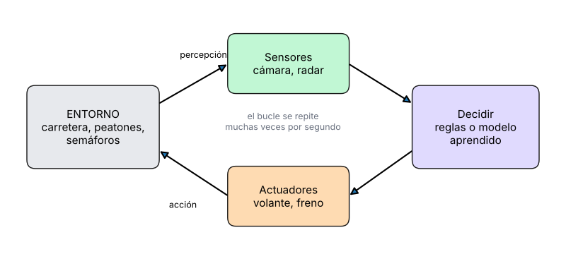

UD1 · Conceptos clave de la IA
Qué es (y qué no es) la inteligencia artificial, cómo resuelve problemas una máquina y qué es un agente inteligente. Unidad con poco código y mucho razonamiento: problemas en papel, debate y diálogo con una IA, siempre verificando lo que responde.
Libro de referencia: J. F. Puentes Calvo, Tecnologías Inteligentes (2025), capítulos 1–3. Teoría ampliada de cada apartado en la sección 0 de la Teoría. Esta página desarrolla las sesiones con ejemplos resueltos y ejercicios. Los enunciados y criterios de las tareas que se entregan en el aula virtual están en Tareas del aula virtual.
| Ses. | Tema | Libro | Actividad | Producto |
|---|---|---|---|---|
| 1 | ¿Qué es la inteligencia? | 1.1–1.2 | Mapa de inteligencias | Mapa humano/máquina |
| 2 | Datos, información y conocimiento | 1.3 | Sentidos frente a sensores | Inicio de T1 |
| 3 | Historia de la IA | 1.4 | Galería de pioneros | Línea del tiempo |
| 4 | ¿Qué no es IA? | 1.5 | Juego «¿IA o no IA?» | T4 |
| 5 | Tipos de IA y aprendizaje | 2.1–2.2 | Fichas de películas | Ficha |
| 6 | Espacio de estados I | 2.3.1 | 3 y 4 reinas | Árbol de búsqueda |
| 7 | Espacio de estados II | 2.3.1 | Pastor y río, Hanoi; demo Dijkstra y minimax | T2 |
| 8 | Optimización | 2.3.2 | La fábrica A/B; gradiente a ciegas | Problema resuelto |
| 9 | Agentes inteligentes | 2.4 | Coche autónomo o aspirador | T3 |
| 10 | La IA en el mundo real | 3 | Mapa de la IA en Galicia | Exposición |
1. ¿Qué es la inteligencia?
No existe una definición única: la inteligencia es un constructo social que cambia con la cultura y la época. En la China de la dinastía Han, inteligente era quien dominaba los clásicos de Confucio; hoy se confunde a menudo con memoria o con buenas notas. Howard Gardner propuso las inteligencias múltiples (lingüística, lógico-matemática, espacial, musical, corporal, interpersonal, intrapersonal, naturalista…), lo que ya indica que no es una sola capacidad.
El libro recoge una definición de consenso: capacidad general para razonar, planificar, resolver problemas, pensar de forma abstracta, comprender ideas complejas, aprender rápido y, sobre todo, aprender de la experiencia. Esta última parte es la que usaremos para decidir si una máquina es inteligente.
Inteligencia artificial es la disciplina que construye sistemas capaces de realizar tareas que, hechas por una persona, consideraríamos inteligentes: reconocer, predecir, decidir, generar.
Ejercicio 1.1 · Mapa de inteligencias 🟢
Para cada inteligencia de Gardner, decide si una máquina actual la tiene, la imita o no la tiene, con un ejemplo.
2. Datos, información y conocimiento. Sentidos y sensores
| Nivel | Qué es | Ejemplo del semáforo |
|---|---|---|
| Dato | Un valor sin contexto | «rojo» |
| Información | Dato con contexto, que responde a una pregunta | «el semáforo de la esquina está en rojo» |
| Conocimiento | Información que sirve para actuar | «si está en rojo, me paro» |

Percibimos el mundo por los sentidos, y los sistemas de IA por sensores: dispositivos que convierten un fenómeno físico en una señal eléctrica medible. Muchos amplían lo que nosotros percibimos, y otros imitan sentidos animales que no tenemos (ecolocalización, magnetorrecepción, visión infrarroja).
| Sentido | Sensor | Fenómeno físico | Dónde aparece |
|---|---|---|---|
| Vista | Sensor de imagen CMOS | Efecto fotoeléctrico: la luz genera carga | Cámara del móvil |
| Oído | Micrófono MEMS | La presión del aire deforma una membrana y varía su capacidad | Asistentes de voz |
| Tacto | Pantalla capacitiva | El dedo cambia la capacidad eléctrica | Móvil, tableta |
| Equilibrio | Acelerómetro, giroscopio | Inercia de una masa microscópica | Girar la pantalla, pulsera de actividad |
| Ecolocalización (murciélago) | Ultrasonidos | Tiempo de ida y vuelta del eco | Sensor de aparcamiento |
| Magnetorrecepción (aves) | Magnetómetro de efecto Hall | El campo magnético desvía cargas en movimiento | Brújula del móvil |
| Infrarrojos (serpientes) | Sensor PIR, cámara térmica | Radiación infrarroja de los cuerpos calientes | Luces con detector de presencia |
El otro lado son los actuadores, que convierten una señal en acción: motores, altavoces, pantallas, servos, relés, LED.
La realidad como patrones. Una fuente que siempre emite el mismo símbolo no aporta información (ya sabemos lo que vendrá); una completamente aleatoria tampoco permite predecir nada. Lo interesante está en medio: aprender es encontrar patrones en los datos.
Ejercicio 2.1 · ¿Dato, información o conocimiento? 🟢
Clasifica: a) «37,8»; b) «La temperatura de Uxía es de 37,8 °C»; c) «Con más de 37,5 °C, Uxía no debe ir al instituto»; d) «A Coruña, 14 °C, 85 % de humedad, 3 de noviembre a las 9:00».
Ejercicio 2.2 · Sensores del móvil 🟡
Nombra cuatro sensores de tu móvil, el fenómeno físico en el que se basan y una función de IA que los use.
3. Historia: veranos e inviernos
| Época | Hito | Idea clave |
|---|---|---|
| Siglo XIX | Babbage y Ada Lovelace | Lovelace escribe el primer algoritmo para una máquina |
| 1936–1950 | Alan Turing | La máquina universal y el test de Turing: ¿puede pensar una máquina? |
| 1943 | McCulloch y Pitts | Primer modelo matemático de neurona |
| 1956 | Conferencia de Dartmouth | Nace el nombre «inteligencia artificial» (McCarthy, Minsky…) |
| 1958 | Perceptrón (Rosenblatt) | La primera red que aprende |
| 1970s y finales de los 80 | Inviernos de la IA | Promesas incumplidas, poca capacidad de cálculo: se corta la financiación |
| 1980s | Sistemas expertos | Reglas escritas por especialistas |
| 1997 | Deep Blue gana a Kasparov | Búsqueda y fuerza bruta |
| 2000s | Big Data | Internet genera datos masivos para entrenar |
| 2012 | AlexNet | El deep learning arrasa en visión artificial |
| 2017 | Transformers | La arquitectura de los modelos de lenguaje actuales |
| 2022– | IA generativa | ChatGPT y generadores de imagen, música y vídeo: el «mejor verano» |

Patrón general: las expectativas suben más rápido que la tecnología; cuando no se cumplen, llega un invierno. Lo que desencadenó el verano actual fue la combinación de datos masivos + capacidad de cálculo (GPU) + algoritmos (redes profundas).
Ejercicio 3.1 · Pioneros y pioneras 🟢
Elige una persona: Ada Lovelace, Grace Hopper, Walter Pitts, Karen Spärck Jones, Fei-Fei Li, Kate Crawford, Geoffrey Hinton o Cynthia Breazeal. Prepara una tarjeta con su fecha, su aportación en una frase y un concepto que tuviste que preguntar para entenderla. Anota la cadena de preguntas que hiciste a la IA y comprueba cada dato en una fuente web.
4. ¿Qué es IA y qué no lo es?
Según el libro, no son IA por sí mismos: los algoritmos deterministas (ordenar, buscar), la programación con reglas fijas, la automatización, la estadística, los sensores y el IoT, los simuladores, las bases de datos y las redes. Pero un sistema de IA suele contener piezas de todos ellos.

Criterio de clase (sale de la definición de inteligencia): ¿aprende de la experiencia?, ¿se adapta a situaciones nuevas?, ¿decide según el contexto?
Ejercicio 4.1 · ¿IA o no IA? 🟡
Clasifica (IA, no IA o depende) y justifica: termostato clásico; termostato que aprende tus horarios; filtro antispam; hoja de cálculo; robot aspirador que mapea la casa; semáforo con temporizador; recomendaciones de Spotify; calculadora; puerta automática; desbloqueo facial; detector de humo; teclado predictivo; GPS calculando una ruta; corrector ortográfico.
5. Tipos de IA y cómo aprende una máquina
| Clasificación | Tipos |
|---|---|
| Según la tarea | Débil o estrecha: hace una tarea concreta (todas las actuales). Fuerte o general: igualaría a una persona en cualquier tarea (no existe) |
| Según la escuela | Simbólica: reglas y lógica escritas por personas (sistemas expertos). Conexionista: redes neuronales que aprenden de datos |
| Según cómo aprende | Supervisado: ejemplos con la respuesta (regresión, clasificación). No supervisado: sin respuestas, busca estructura (agrupamiento). Por refuerzo: prueba, recibe premios o castigos y mejora |

El entrenamiento en 5 pasos (ejemplo: distinguir perros y gatos):
- Recoger y revisar los datos: miles de fotos etiquetadas.
- Dividir: entrenamiento (≈ 80 %) y prueba (≈ 20 %).
- Entrenar: el modelo ajusta sus parámetros para equivocarse menos. Cada pasada completa por los datos es una época.
- Evaluar con las fotos de prueba, que nunca vio.
- Desplegar y vigilar; si empeora, volver al paso 1.
Entrenar es, en el fondo, un problema de optimización: buscar los parámetros que hacen mínimo el error (apartado 7).
Ejercicio 5.1 · Supervisado, no supervisado o refuerzo 🟢
a) Predecir el precio de un piso a partir de sus metros. b) Agrupar clientes de una tienda por sus compras sin categorías previas. c) Un robot que aprende a andar cayéndose. d) Detectar si un correo es spam con miles de correos marcados. e) AlphaGo jugando contra sí mismo.
Ejercicio 5.2 · ¿Por qué separar entrenamiento y prueba? 🟡
6. Resolver problemas buscando: el espacio de estados
Muchos problemas se pueden describir como un grafo: cada estado es una situación posible y cada transición, una acción que lleva de un estado a otro. Resolver es encontrar un camino desde el estado inicial hasta un estado final.
- Explosión combinatoria: el número de estados crece tan deprisa que no se pueden explorar todos. Con 3 reinas en 3×3 hay 84 colocaciones; con 4 reinas, 1820; con 10 reinas en 10×10, casi 10¹⁴: a un millón por segundo, más de tres años.
- Poda: si una situación parcial ya incumple las reglas, se descartan todas las que empiezan así. La inteligencia está en no explorar lo que no lleva a nada.
- Minimax (ajedrez y juegos): yo elijo la jugada que maximiza mi ventaja suponiendo que el rival elegirá la que la minimiza. Como no se puede llegar al final, se mira unas jugadas hacia delante y se valora la posición sumando el valor de las piezas. La poda alfa-beta recorta ramas que no pueden mejorar el resultado.
- Dijkstra: encuentra el camino más corto en un grafo con distancias, como hace un GPS.
Ejercicio 6.1 · Las 3 y las 4 reinas 🟡
a) Coloca 3 reinas en un tablero de 3×3 sin que se ataquen. Si no puedes, demuestra que es imposible. b) Haz lo mismo con 4 reinas en 4×4, colocando una por fila y dibujando el árbol de búsqueda con poda.
Ejercicio 6.2 · El pastor, el lobo, el cordero y el heno 🟡 (tarea T2)
Un pastor tiene que cruzar un río con un lobo, un cordero y un fardo de heno. La barca solo lleva al pastor y a uno más. Si se quedan solos, el lobo se come al cordero y el cordero se come el heno. Indica cómo representas los estados, cuáles están prohibidos, el grafo y una solución.
Ejercicio 6.3 · Torres de Hanoi 🟡
¿Cuántos movimientos mínimos hacen falta con 3 discos? ¿Y con n? ¿Cuánto se tardaría con 64 discos a un movimiento por segundo?
7. Resolver problemas optimizando
Optimizar es buscar el mejor valor de una función objetivo (beneficio, error, tiempo) respetando unas restricciones. Cuando no se puede calcular la solución exacta en un tiempo razonable, se aceptan soluciones suficientemente buenas con métodos inspirados en la naturaleza: algoritmos genéticos (cruzar y mutar las mejores soluciones) o enjambre de partículas (muchas soluciones que se mueven imitando a las mejores).

Descenso del gradiente. La metáfora del libro: bajar una montaña con los ojos vendados, notando solo la pendiente bajo los pies y dando pasos hacia abajo. Así se entrenan las redes neuronales: la «montaña» es el error del modelo y cada paso ajusta los parámetros. Peligro: quedarse en un mínimo local (un valle que no es el más profundo).
Ejercicio 7.1 · La fábrica 🟡
Una fábrica produce A y B, con 3 € y 4 € de beneficio por unidad. A necesita 2 h de montaje y 1 h de embalaje; B, 1 h de montaje y 2 h de embalaje. Hay 100 h de montaje y 80 h de embalaje. ¿Cuántas unidades de cada uno maximizan el beneficio? Resuélvelo gráficamente.
Ejercicio 7.2 · El gradiente en Python 🔴
Encuentra el mínimo de f(x) = (x − 3)² + 1 empezando en x = 10 con
pasos x = x − 0,1 · f'(x). ¿Qué pasa con un paso de
1,1?
8. Agentes inteligentes
Un agente inteligente es una entidad autónoma que percibe su entorno con sensores y actúa sobre él con actuadores para maximizar una medida de rendimiento, aprendiendo de la experiencia. Tiene cinco componentes:

- Percepción: sensores.
- Actuación: actuadores.
- Procesamiento: convertir lo percibido en decisiones.
- Representación del conocimiento: mapa, reglas, modelo del mundo.
- Aprendizaje: mejorar con la experiencia.
Ejemplo del libro: un robot aspirador limpia el suelo, pero si algún día «sube a las camas», su entorno será otro y tendrá que adaptarse. Un agente de ajedrez, en cambio, tiene un entorno perfectamente definido (el tablero).
Ejercicio 8.1 · Ficha de agente: coche autónomo 🟡 (tarea T3)
Describe entorno, sensores (con fenómeno físico), actuadores, procesamiento, conocimiento, aprendizaje, medida de rendimiento y grado de autonomía.
Ejercicio 8.2 · ¿Es una persona un agente inteligente? 🟢
9. La IA en el mundo real
Ámbitos del capítulo 3: automatización industrial, análisis de datos, robótica, medicina (diagnóstico por imagen), transporte, entretenimiento, finanzas (detección de fraude), recursos humanos, educación, medios, agricultura (riego de precisión, detección de plagas), energía y medio ambiente, y derecho. Curiosidad: el autor declara que este capítulo lo escribió una IA. ¿Se nota? ¿Qué echas en falta (ejemplos concretos, fuentes, opinión)?
Ejercicio 9.1 · Mapa de la IA en Galicia 🟡
Por parejas, elegid un ámbito y buscad: un uso real de la IA, una empresa o centro cercano que trabaje en él y un riesgo de su uso intensivo. Comprobad cada dato de la IA en otra fuente.
Tareas evaluables de la unidad
| Tarea | Criterio | Peso | Qué se entrega |
|---|---|---|---|
| T1 · Tabla de sensores y actuadores | CA2.2 | 25 % | 8 sensores (luz, sonido, distancia, movimiento, temperatura, posición) y 4 actuadores, con fenómeno físico, magnitud, aparato y una fuente que lo confirme |
| T2 · Problema resuelto en papel | CA2.1 | 30 % | Pastor o Hanoi: estados, prohibidos, grafo y solución justificada (+1 con Hanoi para n discos) |
| T3 · Ficha de agente | CA2.4, CA2.3 | 30 % | Coche, aspirador, robot o un agente propio, con los cinco componentes y una conclusión crítica |
| T4 · ¿IA o no IA? | CA2.1, CA2.3 | 15 % | 5 sistemas nuevos clasificados y justificados con el criterio de la sección 4 |
Las tareas son el 30 % de la nota de la unidad y la prueba el 70 %; hay que aprobar las dos partes.
Tareas del aula virtual
Estas son las tareas publicadas en el aula virtual del curso (sección «Conceptos clave de IA → Práctica»). La entrega se hace siempre en el aula virtual: aquí solo están los enunciados y los criterios para consultarlos con calma. Las fechas son las del aula virtual en el curso 2026-27.
| # | Tarea | Abre | Entrega | Formato | Criterios |
|---|---|---|---|---|---|
| AV1 | Tareas primeras sesiones | 16 sep | 24 sep | Documento + PDF | CA2.1, CA2.3 |
| AV2 | Investigación sobre sensores | 23 sep | 2 oct | Presentación | CA2.2 |
| AV3 | Investigación sobre actuadores | 23 sep | 7 oct | Presentación | CA2.2 |
| AV4 | Algoritmo: «Robot unplugged» | 23 sep | 12 oct | Documento | CA2.1 |
| AV5 | Machine Learning en casos reales | 23 sep | 14 oct (10:00) | Documento | CA2.3, CA2.4 |
| AV6 | Debate ético: coches autónomos | 14 oct | 21 oct | Debate en grupo | CA2.3 |
| AV7 | Identificación de sensores y actuadores | 23 sep | 12 nov | CA2.2, CA2.4 |
AV1 · Tareas primeras sesiones
Tres tareas en un mismo documento. Entrega: el documento original y su exportación a PDF, bien estructurado, con la resolución de las tres.
Tarea 1 · Clasificación de sistemas tecnológicos. Objetivo: diferenciar automatización, IA clásica, machine learning (ML) y deep learning (DL). Clasifica estos 13 sistemas:
- Puerta automática (sensor de movimiento)
- Netflix recomendando películas
- Sistema de diagnóstico médico con reglas SI-ENTONCES
- Reconocimiento facial en un smartphone
- Termostato que mantiene la temperatura
- ChatGPT
- Sistema de ajedrez (Deep Blue)
- Filtro de spam basado en palabras clave
- Conducción autónoma (Tesla)
- Asistente Alexa
- Calculadora programada
- AlphaFold (predicción de la estructura de proteínas)
- Duolingo
Criterios: justificación clara de cada clasificación · qué tipo de algoritmo podría usarse · qué datos necesitaría cada sistema.
Tarea 2 · Línea temporal de la IA. Objetivo: comprender la evolución histórica y sus hitos. Crea una línea temporal visual (digital) con los eventos principales: test de Turing (1950), Dartmouth (1956), los inviernos de la IA, los sistemas expertos, etc. Para cada evento: año y nombre, qué tecnología se desarrolló, cuál fue el resultado y por qué fracasó o tuvo éxito. Usa símbolos: 📈 avance importante · ❄️ periodo de declive · 🚀 cambio de paradigma.
1950 ────────────────────────────────────────────────────────── 2026
| | | | | | | |
Turing Dartmouth Invierno 1 Expertos Invierno 2 ML DL LLMsResultado esperado: un documento visual que muestre que la IA no avanzó de forma lineal, y que explique por qué ML y DL son distintos de los intentos anteriores.
Tarea 3 · Análisis comparativo de capacidades. Objetivo: entender las diferencias prácticas entre IA clásica, ML y DL con un caso real. Elige un caso y escribe un análisis de 300–400 palabras:
- A · Reconocimiento de caras: cómo sería con IA clásica, con ML tradicional y con DL; qué datos necesitaría cada uno, qué precisión cabe esperar y dónde falla cada uno.
- B · Traducción automática: de las frases predefinidas (años 2000) a la estadística (2010) y a los Transformers (desde 2015). ¿Qué cambió entre cada generación?
- C · Predicción de enfermedades: médico (experiencia y síntomas), IA clásica (base de datos síntoma → enfermedad), ML (patrones en el historial de 100 000 pacientes), DL (tumores en millones de imágenes). ¿Cuándo es apropiado cada uno?
Criterios: comprensión clara de las diferencias · ejemplos concretos · análisis de fortalezas y debilidades · reflexión sobre cuándo usar cada tecnología.
Para preparar las tres tareas: sección 3 (historia), sección 4 (¿qué es IA?) y sección 5 (tipos de IA) de esta página.
AV2 · Investigación sobre sensores
Busca los distintos tipos de sensores que usa la IA. Indica la función de cada uno y pon ejemplos, desde los más sencillos hasta los más complejos.
Entrega: presentación en LibreOffice Impress o Canva con portada, índice, tipos de sensores (con ejemplos y función de cada tipo) y bibliografía y webgrafía.
Se valora: la explicación de cómo funciona cada sensor y el uso de imágenes referenciadas (con su fuente).
Apoyo: sección 2 · Sentidos y sensores. Para cada sensor, indica el fenómeno físico en el que se basa: es el mínimo del criterio CA2.2.
AV3 · Investigación sobre actuadores
Busca los distintos tipos de actuadores que se usan en la IA, sobre todo en robots. Indica su función y pon ejemplos.
Entrega: presentación (Impress, Canva…) con portada, índice, tipos de actuadores (con ejemplos y función de cada tipo) y bibliografía y webgrafía.
Se valora: la explicación de cómo funciona cada actuador y el uso de imágenes referenciadas.
Pistas de clasificación: actuadores mecánicos (motor de corriente continua, servomotor, motor paso a paso, actuadores neumáticos e hidráulicos), lumínicos (LED, pantallas), sonoros (altavoces) y térmicos (resistencias, células Peltier).
AV4 · Algoritmo: «Robot unplugged»
Juego de pensamiento algorítmico por parejas: una persona hace de robot y la otra le da instrucciones. El objetivo es que el robot llegue a un punto marcado; quien da las órdenes no se mueve.
Instrucciones válidas (nivel 1): adelante X pasos · atrás X pasos · gira 90° a la derecha · gira 90° a la izquierda · espera X segundos.
Entrega: escribe dos soluciones para el mismo recorrido: una ineficiente y otra optimizada, y compara cuántas instrucciones usa cada una.
Se valora: que las instrucciones sean precisas y se puedan ejecutar sin ambigüedad, la comparación entre las dos soluciones y la reflexión sobre cómo simplificar.
AV5 · Machine Learning en casos reales
Analiza un sistema de IA real siguiendo siempre el mismo esquema: contexto · sensores (entrada) · procesamiento (IA) · actuadores (acción) · beneficios · riesgos éticos.
- Caso 1: diagnóstico médico, detección de cáncer en radiografías.
- Caso 2: uno que elijas tú, resuelto con todos los apartados.
Se valora: que los sensores, el procesamiento y los actuadores sean concretos y estén bien conectados, y que haya al menos dos beneficios y dos riesgos éticos argumentados.
AV6 · Debate ético: coches autónomos
Moción: «¿Debe permitirse la circulación de coches autónomos en las ciudades?»
La clase se divide en un grupo a favor y otro en contra (los grupos se asignan en el aula virtual). Cada grupo prepara sus argumentos, con datos verificados y su fuente, y anticipa los del otro grupo.
Se valora: argumentos variados (seguridad, empleo, responsabilidad legal, privacidad, accesibilidad…), datos con fuente, capacidad de rebatir y respeto en el turno de palabra.
AV7 · Identificación de sensores y actuadores
Para cada caso, identifica sus sensores, el procesamiento que hace la IA y sus actuadores:
- Smartphone (análisis completo)
- Robot aspirador (tipo Roomba)
- Coche autónomo
Después busca dos casos más, analízalos igual y justifica por qué los has elegido.
Entrega: un documento PDF con toda la información.
Se valora: que los sensores y actuadores sean concretos, con el fenómeno físico de cada sensor (CA2.2), que el procesamiento explique qué decide la IA, y que los dos casos extra sean originales.
Relación con las tareas de la programación: AV2, AV3 y AV7 cubren la tarea T1 (sensores y actuadores, CA2.2); AV7 y AV5 preparan T3 (ficha de agente); AV1 incluye T4 (¿IA o no IA?), y AV4 trabaja el pensamiento algorítmico de T2.
Preguntas tipo de examen
- Define dato, información y conocimiento con un ejemplo distinto del semáforo.
- ¿Por qué un algoritmo de ordenación no es IA y un filtro antispam sí?
- Nombra los cinco componentes de un agente y aplícalos a un robot aspirador.
- IA débil y fuerte: diferencia. ¿Existe hoy alguna IA fuerte?
- Un ejemplo de aprendizaje supervisado, otro de no supervisado y otro por refuerzo.
- ¿Por qué no se puede resolver el ajedrez explorando todos los estados? ¿Qué hace minimax?
- Explica el descenso del gradiente con la metáfora de la montaña. ¿Qué es un mínimo local?
Para saber más
- Libro: J. F. Puentes Calvo, Tecnologías Inteligentes (2025), caps. 1–3 y sus retos. Licencia CC BY-NC-ND 4.0.
- Notebooks de demostración:
01 Dijkstra – ciudadesy01 ¿Jugamos al ajedrez?en github.com/FranPuentes/iTI2025. - Teoría ampliada: sección 0 de la Teoría.